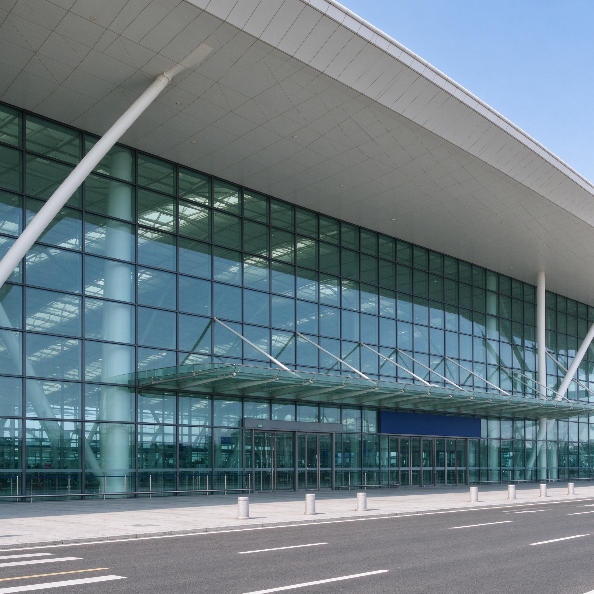
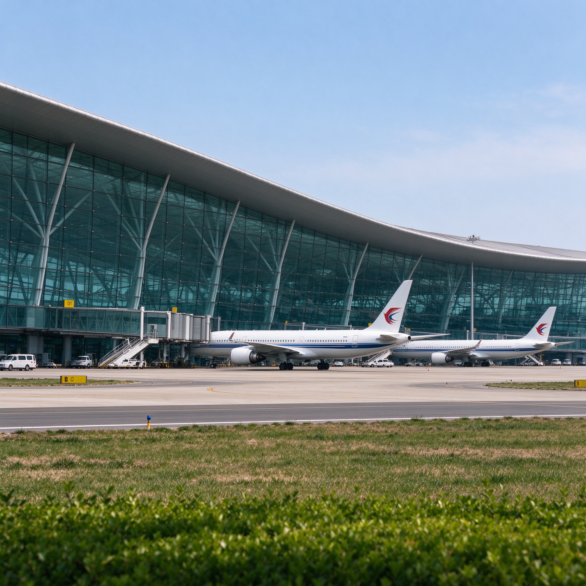
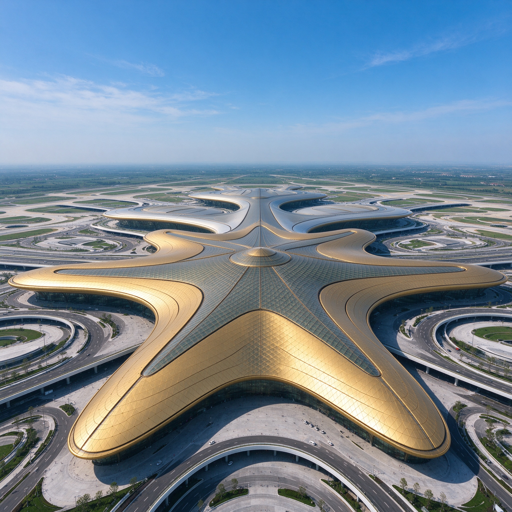

广场
点评榜
CB
用户真实行程评价 ｜ 过亿数据 ｜ 综合评审规则 ›
更新
航司服务榜
综合TOP5
更新
机场设施榜
千万级机场
更新
航线餐食榜
热门航线
点评行程
2026-09-02 温州龙湾-… | 更多 ›

出发 温州龙湾
4.56分
👥👤 310544人评分

到达 大连周水子
4.58分
机场中转榜TOP2（… ›
推荐榜单
机场榜
航司榜
航班榜
👑 全国千万级机场中转便捷榜
最近路过机场上榜了 ›

TOP 1北京大兴机场
4.67 中转便捷分
20030人评选
"中转候机环境优越，配有睡眠舱，过夜也舒适"
TOP 2
大连周水子机场
4.66 中转便捷分
7918人评选
"提供免费中转餐食和住宿补贴"
TOP 2
乌鲁木齐天山机场
4.66 中转便捷分
17821人评选
"中转有按摩椅和休息室可以休息养神"